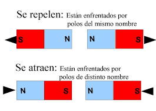
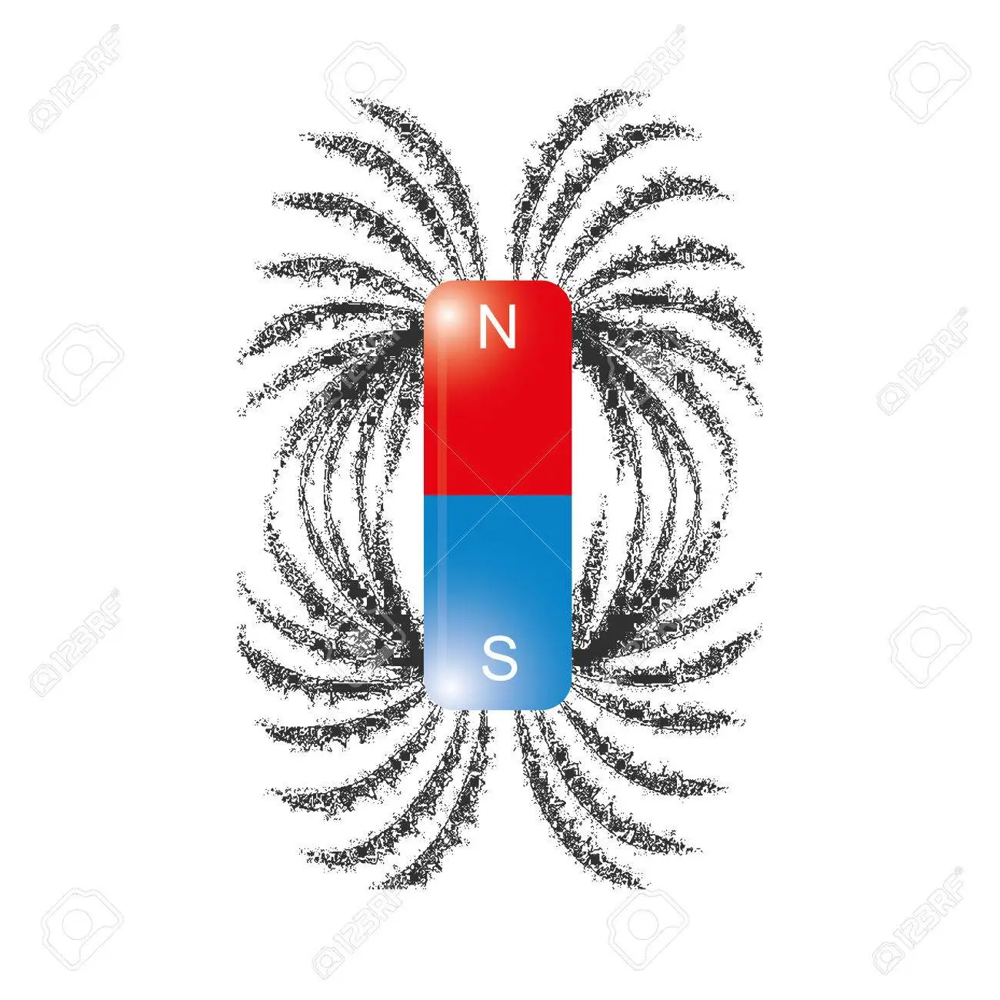
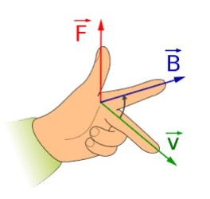
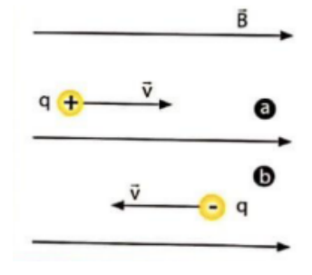
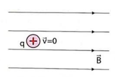
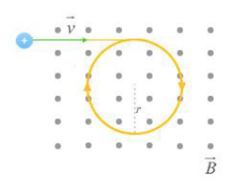
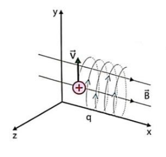
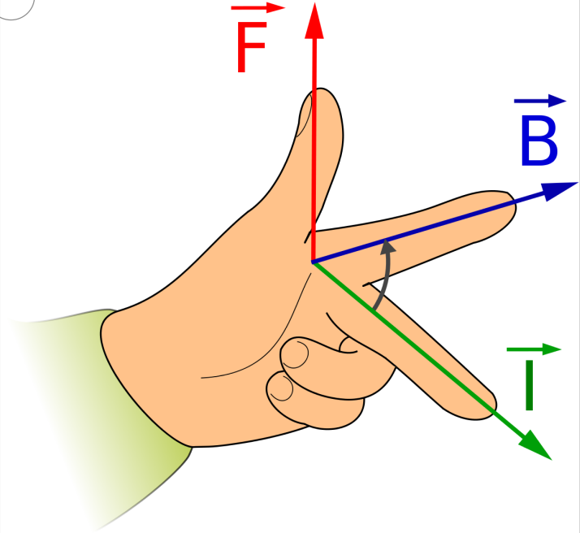
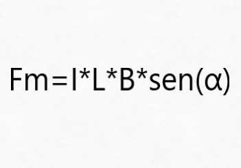

Para comprender como funciona un Campo Magnético, primero debemos entender como funciona la base de todo, los imanes.
Los imanes son objetos capaces de atraer objetos fabricados con hierro u otros metales, a esta propiedad se le llama Magnetismo. Los objetos metálicos que quedan atraídos por el imán se comportan como imanes temporales y pueden atraer otros objetos por un corto período.
Los imanes tienen dos zonas llamadas polo norte magnético y polo sur magnético. A su vez estos se pueden atraer o repeler según como estén posicionados. Por ejemplo, si enfrentamos dos imanes por los polos diferentes estos se atraerán. En cambio, si los enfrentamos por los polos iguales los imanes se repelerán.
Un imán genera a su alrededor un Campo Magnético. Este es un campo vectorial, lo que significa que a cada punto alrededor del imán, le corresponde un vector campo magnético. Dicho campo puede ser rerpresentado por líneas de campo magnético, pueden visualizarse colocando cerca de un imán limaduras de hierro como se muestra en la imágen:
Como se ve, las limaduras cuando caen no se colocan al azar, sino que se ubican formando líneas que van desde un polo a otro del imán.
El vector campo magnético se representa con la letra B, a su vez este vector tiene sus propias caracerísticas y propiedades que veremos a continuación.
Las fuerzas aplicadas sobre una carga en movimiento en un campo siguen una regla de direcciones que se asocia con una posicion de la mano izquierda.
Si la carga con la que se trabaja es negativa la regla de la mano izquierda se invierte
Cuando la velocidad de la carga es paralela al campo, el ángulo que forman estos vectores es 0° o 180°. Si la fuerza magnética sobre la carga se calcula F = qvB sen y sen0° = sen180° = 0, entonces quiere decir que la fuerza magnética resultante va a ser 0. Y como la fuerza es 0, se moverá con velocidad constante, describiendo un M.R.U.
Cuando la carga está en reposo, continuará así ya que no actúa una fuerza magnética cuando la carga está quieta.
Si la velocidad de la carga es perpendicular al campo la fuerza que éste ejerce desvía a la partícula. Por lo que la velocidad estará cambiando su dirección constantemente, pero su módulo de mantendrá al ser la fuerza perpendicular a la velocidad. Esto origina un movimiento circular uniforme.
Cuando la velocidad inicial de la carga tiene una dirección que forma un ángulo diferente a 0°, 90° y 180°. El movimiento será una combinación de un movimiento rectilíneo y circular. Avanzará con M.R.U. en la dirección del campo magnético y a su vez girará con M.C.U. en planos perpendiculares a la dirección del campo magnético.
En estos casos la regla de la mano izquierda se aplica de una manera similar, reemplazando la velocidad de la carga por la intensidad de la corriente del conductor.
De manera similar la fórmula para calcular y despejar datos es similar:
